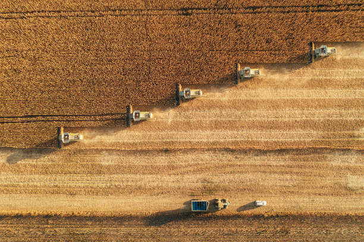
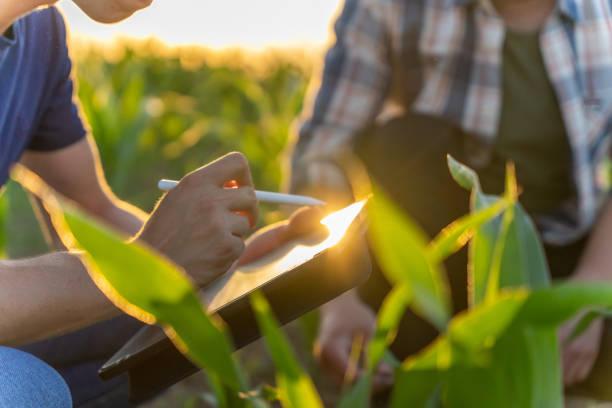
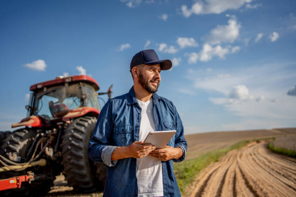

 |
 |
 |
||
|---|---|---|---|---|
| Sistemas ILPF (Integração Lavoura-Pecuária-Floresta) e Pecuária de Baixo Carbono: A grande revolução atual não é apenas tecnológica, mas de manejo. O sistema ILPF alterna ou combina a criação de gado com o cultivo de grãos e o plantio de árvores em uma mesma área. As árvores fornecem sombra (melhorando o bem-estar animal) e capturam os gases de efeito estufa emitidos pelo gado. O resultado é a produção da chamada "carne carbono neutro", uma exigência crescente dos mercados internacionais, além de recuperar pastagens degradadas. | A tecnologia vestível chegou ao pasto. Hoje, bovinos utilizam colares, brincos eletrônicos e sensores inteligentes que funcionam conectados à Internet das Coisas (IoT). Esses dispositivos coletam dados 24 horas por dia sobre a saúde, a movimentação e a digestão de cada animal. Com o apoio da Inteligência Artificial, o produtor recebe alertas no celular para tratar doenças antes mesmo que elas se agravem, garantindo um rebanho mais saudável e produtivo. | A pressão por sustentabilidade fez com que a rastreabilidade se tornasse uma prioridade na agropecuária. Usando a tecnologia blockchain e o monitoramento via satélite, é possível registrar e proteger todas as informações sobre a vida do animal, desde o seu nascimento até a chegada ao supermercado. Isso garante aos compradores e consumidores que os produtos são livres de desmatamento e estão em conformidade com as leis ambientais e trabalhistas. |

Rações |
Sobre nós |
Serviços |
Vídeos |
|---|